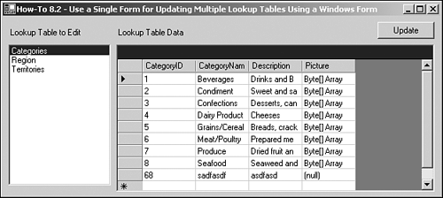
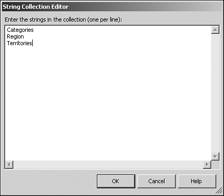

8.2 Use a Single Windows Form to Update Multiple Lookup Tables
Just about every database application uses lookup tables of some sort or another, such as categories, regions, and territories in the Northwind database. Normally, each of these lookup tables would get its own form for viewing or updating the information in the tables. This example will provide the means for you to create a single form to maintain any of your simple lookup tables, again using a Windows Form.
You have a number of simple lookup tables in your application, and it is a pain to have to create a form for each table. How do you create a Windows Form that can be used to update most if not all of your lookup tables that are contained in your database?
Technique
Using two main controls, the ListBox control and DataGrid control, you can create a form that will take care of most of your simple lookup tables. When you get into those tables that contain lookups or graphics, you will have to come up with a more complete method to modify the data.
For this example, you will be using some familiar friends: DataAdapter, CommandBuilder, and DataTable objects.
Steps
Open and run the VB.NET -Chapter 8 solution. From the main Windows Form, click on the command button with the caption How-To 8.2. You will then see the form displayed in Figure 8.3.

When you choose a new item from the list of tables on the left, the data grid on the right becomes filled with the data from the chosen table. You can then modify the data in the data grid and click on the Update button to update the data back to the server. This includes modifying existing records, as well as adding and deleting records in the DataGrid control.
Create a Windows Form. Then place the controls shown in Figure 8.3 with the properties set forth in Table 8.3.
Table 8.3. Label, ListBox, DataGrid, and Command Button Controls Property Settings
|
Label
|
Name
|
Label1
|
| |
Text
|
Lookup Table to Edit
|
|
Label
|
Name
|
Label2
|
| |
Text
|
Lookup Table Data
|
|
ListBox
|
Name
|
lstLookupTables
|
|
DataGrid
|
Name
|
dgTableData
|
|
Button
|
Name
|
btnUpdate
|
Add data to the Items collection of lstLookupTables. To do this, click on the builder button beside the Items property in the property sheet for lstLookupTables. You will then see the String Collection Editor as shown in Figure 8.4. The Items you will add include Categories, Region, and Territories.

Note
 |
To make this example truly "data driven," you would want to either keep these table names in a table by themselves and set the data source of lstLookupTables to that table, or generate the list at runtime by naming your lookup tables a specific way.
These values are hard coded for the sake of expediency and so that no more tables are added to Northwind.
|
In the class module for the form, add the following Private declarations just below the line of code that reads Windows Form Designer generated code.
Dim mcnn As New OleDb.OleDbConnection()
Dim modaLookupData As OleDb.OleDbDataAdapter
These lines of code declare Connection and DataAdapter objects that will be used throughout the form.
On the form, add the code in Listing 8.9 to the Load event.
Listing 8.9 frmHowTo8_2.vb: Establishing the Connection String and Pointing to the First Item in lstLookupTables
Private Sub frmHowTo8_2_Load(ByVal sender As Object, _
ByVal e As System.EventArgs) Handles MyBase.Load
'-- Initialize the connection string.
mcnn.ConnectionString = BuildCnnStr("(local)", "Northwind")
'-- Point to the first lookup table; this fires
' the SelectedIndexChanged event off the list box.
Me.lstLookupTables.SelectedIndex = 0
End Sub
On the lstLookupTables list box, add the code in Listing 8.10 to the SelectedIndexChanged event. This routine assigns the new table chosen in lstLookupTables as the Select command for the modaLookupData data adapter. The data table called dtData is then filled and set as the data source for dgTableData.
Listing 8.10 frmHowTo8_2.vb: Populating the DataGrid Control
Private Sub lstLookupTables_SelectedIndexChanged(ByVal sender As System.Object,
ByVal e As System.EventArgs) Handles lstLookupTables.SelectedIndexChanged
Dim dtData As New DataTable()
Try
'-- Update the data adapter and data table to reflect the new data,
' and reassign the data source of the data grid.
modaLookupData = New OleDb.OleDbDataAdapter("Select * From " &
Me.lstLookupTables.Text, mcnn)
modaLookupData.Fill(dtData)
Me.dgTableData.DataSource = dtData
Catch excData As Exception
MessageBox.Show(excData.Message)
End Try
End Sub
On the btnUpdate button, add the code in Listing 8.11 to the Click event. This routine performs a task you have seen in one form or another throughout this book. A CommandBuilder object is created off the modaLookupData data adapter, and it is used to update the data table. The Update method of modaLookupData is executed, followed by the AcceptChanges method of the dtFromGrid data table.
Listing 8.11 frmHowTo8_2.vb: Populating the DataGrid Control
Private Sub btnUpdate_Click(ByVal sender As System.Object, _
ByVal e As System.EventArgs) Handles btnUpdate.Click
Dim dtFromGrid As DataTable
'-- Create the command builder to update (post) the data in the data grid
' back to the server.
Dim custCB As OleDb.OleDbCommandBuilder = _
New OleDb.OleDbCommandBuilder(modaLookupData)
Try
'-- Have to open the connection.
mcnn.Open()
'-- Grabbing the data table from the DataSource
' property of the data grid
' saves a bunch of hassles trying to track the data table directly.
dtFromGrid = CType(dgTableData.DataSource, DataTable)
'-- Commands necessary to actually post back to server.
modaLookupData.Update(dtFromGrid)
dtFromGrid.AcceptChanges()
'-- Don't forget to close the connection.
mcnn.Close()
Catch excp As Exception
MessageBox.Show("Couldn't update server")
End Try
End Sub
Tip
 |
One interesting thing of note is the way that the DataTable object is derived in this routine. Instead of creating it from a DataSet or DataAdapter object, we get it from the DataGrid object, with the line of code that reads like this:
dtFromGrid = CType(dgTableData.DataSource, DataTable)
|
How It Works
When the form opens, the initial table's data in the list box is loaded into the DataGrid control by setting the SelectedIndex of the lstLookupTables to 0. When this occurs and when a user selects a new item in the list, a Select statement is generated and loaded into a data adapter, which fills a data table. This, in turn, is used for the data source of the data grid, and the data is displayed.
When the user clicks the button with the caption Update, a CommandBuilder object is generated off the DataAdapter object. The Update command for the data adapter is then invoked, with the Update method called. The data table is then referenced from the data source of the DataGrid control, and the AcceptChanges method is called.
Comments
Creating this kind of utility will save hundreds of hours in some cases, especially if you use it across applications. When starting with something this simple, you can add features to it every time you use it for a new and expanded purpose.